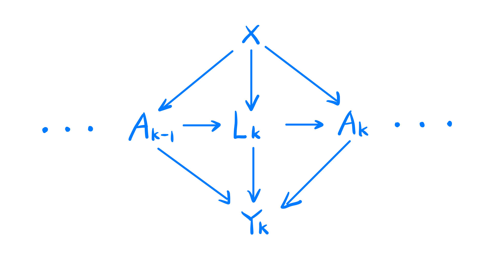
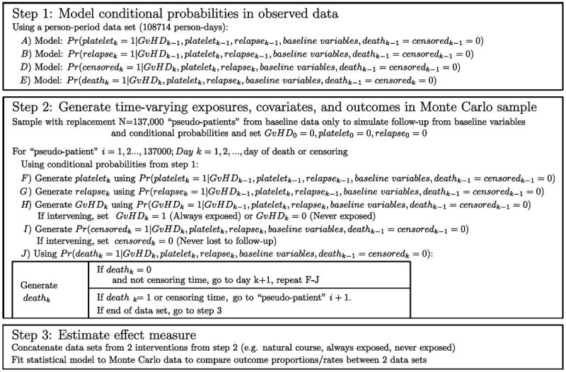

The original paper is The parametric G-formula for time-to-event data: towards intuition with a worked example.
The authors developed a new method for g-formula called parametric g-formula, and they applied it to a worked example about the mortality among the bone marrow transplant patients.
The author would like to know how much they could reduce mortality among bone marrow transplant patients by prescribing a new drug that prevents graft-versus-host disease(GvHD), a side effect of allogeneic marrow transplantation. Whether the patient gets the GvHD(i.e., whether the patient takes the prevention drug) is the treatment variable in this experiment.
Although GvHD is associated in observational studies with an increased risk of mortality, it also reduces the risk of leukemia relapse. It means that any drug that prevents GvHD may have the very undesirable side effect of increasing the rate of relapse.
Note that leukemia relapse is a risk factor for mortality and subsequent GvHD and it will also decrease the incidence of subsequent relapse, which means that leukemia relapse is a time-varying confounder.
The author would like to compare the mortality with and without the GvHD prevention drug with the time-varying confounder taken into consideration.
| Variable | Description |
|---|---|
| \(Y_k\) | indicator of death(1=yes,0=no) at the time \(k\) |
| \(A_k\) | indicator of GvHD (1= yes, 0=no) at the time \(k\) |
| \(L_k\) | indicator of normal platelet levels and relapse (1= normal platelet levels or relapse, 0=not in relapse or below normal platelets)) at the time \(k\) |
| \(V\) (or \(X\) in the DAG) | covariates of patients like sex and age |

From the last blog, we have the following formula for the estimation.
\[ \begin{aligned} E(Y_t(\bf{a}))&=\sum_{k=1}^{t}\sum_{a}\sum_{l}{Pr(Y_k=1|A_k=a_k,L_k=l_k,V=v_o,Y_{k-1}=0)\\ Pr(A_k=a,L_k=l_k,V=v_o,Y_{k-1}=0)}\because\text{conditional probability}\\ &=\sum_{k=1}^{t}\sum_{a}\sum_{l}{Pr(Y_k=1|A_k=a_k,L_k=l_k,V=v_o,Y_{k-1}=0)\times\\ Pr(A_k=a_k|A_{k-1}=a_{k-1},L_k,V=v_o,Y_{k-1}=0) \times \\ Pr(L_k=l_k|A_{k-1}=a,L_k=l_k,V=v_o,Y_{k-1}=0)\times\\ Pr(V=v_0|A_{k-1}=a_{k-1},L_k=l_k,Y_{k-1}=0)\times\\ Pr(Y_{k-1}=0)} \end{aligned} \]
The formula seems complex and have no closed form for the expectation. However, the authors provides a clever way to get its expectation using Monte-Carlo Simulation.
Step 1: the authors perform a pooled logistic regression model (i.e., a logistic model fit to all person periods )on the current dataset first to construct all the conditional probabilities in the formula. Also, they include time (i.e. days since transplant) in the model using a set of polynomial terms. The models for each covariate on day k were fit using only person-days for which the patient had not yet experienced each time-varying covariate on day k − 1.
Step 2: After they deriving all the conditional probabilities, the second step is to generate “pseudo-patients” from Monte Carlo sampling. Although they only have 137 patients, they re-sample 13700 pseudo-patients retaining only baseline covariates from these 137 patients with replacement.
Step 3: Next, they compute the probabilities of these binary covariates (\(Y, A, L\)) conditioning on the baseline covariates (\(V\)) and sample from the corresponding Bernoulli distribution to get its value. For example, we could simulate the value of \(Y_1\) (Whether the patient died on the first day from transplant) by \(Bernoulli(A_1,V,L_1)\). Also, the value of \(A_1\) and \(L_1\) are generated similarly.
From the simulation above, the authors generate 13700 Monte Carlo samples from this time-varying model, and it is easier to estimate the effects using these samples.
For instance, they concatenated the datasets from Step 2, estimating the hazard ratio by comparing the hazards in the “natural course” dataset with those in the “prevented” dataset. This was done by using an indicator variable for the dataset (1=“natural course,” 0=“prevented”) and using that indicator as the exposure variable in a Cox model.
To estimate confidence intervals for the hazard ratio, they repeated Steps 1-3 on 4000 samples of size 137 taken at random with replacement from the original data. The standard deviation (SD) of the 4000 log-hazard ratios approximates the standard error of the log-hazard ratio, and was used to calculate 95% confidence intervals (CIs) using the normal approximation: log-hazard ratio ±1.96*SD(log-hazard ratio).

In the setting, the specification of the models for the conditional probability models are very important for the downstream calculations. In this paper, they tried different models to fit the conditional probabilities and chose the best suitable one. However, it could be the case that the true models are not in these candidates and there exists a better model than the chosen one. The parametric g-formula is especially vulnerable to the assumption of correct model specification, due to the use of multiple models.
Another important assumption is that the effect measure is constant across levels of confounders included in the model. It is required for getting rid of the time-vary confounders by regression. However, this assumption is too strong in the time-varying models and it is hard to prove.
Also, the conditional exchangeablility are essential in this time-varying models and it is also the foundation that we can apply the causal inference to this dataset.
For the assumption of correct model specification, we can try to use different regression models to fit the conditional probabilities and then check their variances. We can also try to change the coefficients in the regression models to whether the corresponding results are changed greatly. Another intuitive way is that we could build a simulation to see what will happen if we intentionally misspecify the conditional expectation models.
For the assumptions that the effect measure is constant across levels of confounders included in the model, we could construct a simulation setting that the effect measure is correlated with the confounders and check whether the corresponding estimators are biased significantly. Another way is to test whether this assumption holds in the given dataset. In my opinion, stratifying the data according to the confounder levels will do.
If the conditional exchangeability are violated, the estimator is questionable since it violated the basic assumption for the parametric g-formula. If we violate the assumptions that the effect measure is constant across levels of confounders included in the model, it means that the effect of the confounders are not identifiable and we cannot use the current g-formula to calculate ATE since it is definitely biased. If we violated the assumption of the correct model specification, the estimation is biased since the parametric g-formula is especially vulnerable to the assumption of correct model specification, due to the use of multiple models.
The conditional exchangeability cannot be checked in any principled way since the exchangeability cannot be empirically tested in observational studies. We can only assume it is satisfied in our data. It is also one of the most essential assumptions in causal inference.